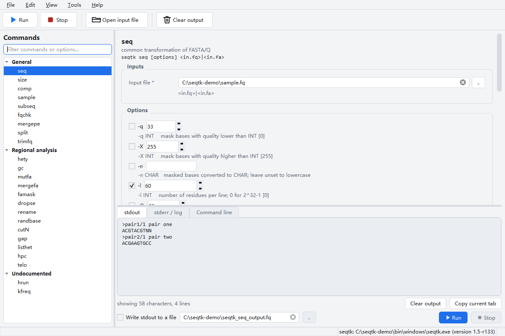
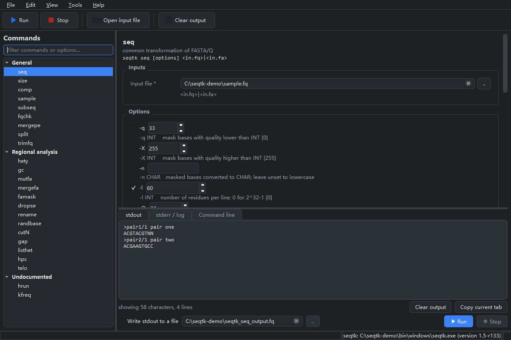
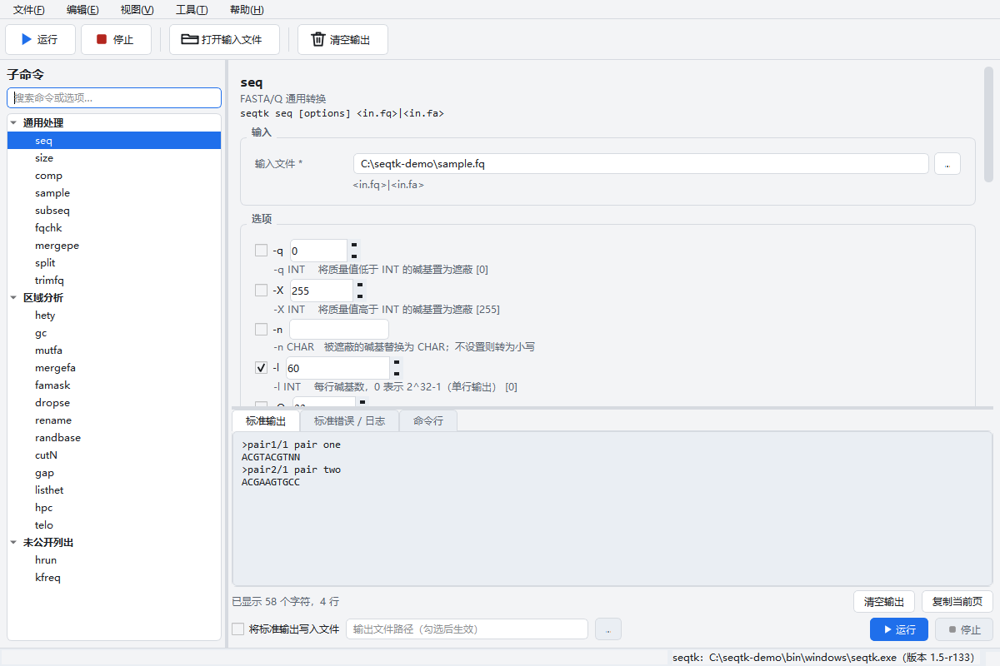
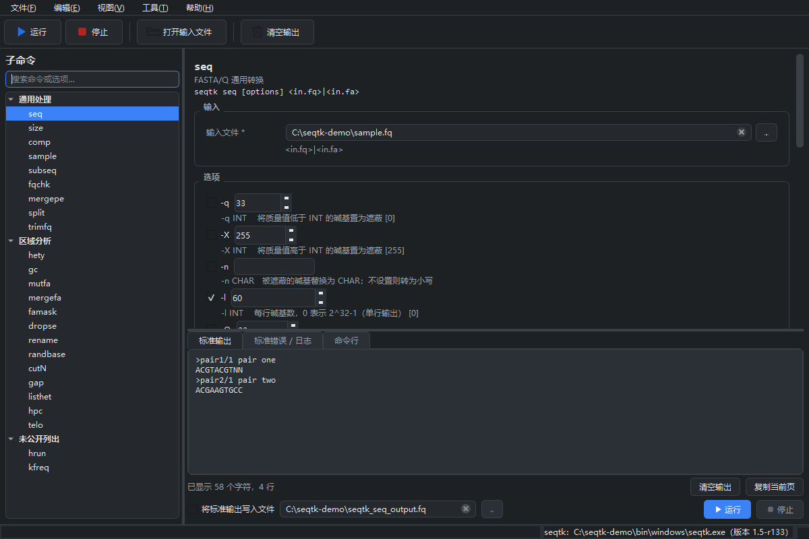

Overview
SeqTK-GUI provides a graphical user interface for
seqtk 1.5-r133, a widely used
command-line tool for processing biological sequences in
FASTA and FASTQ formats. Rather than reimplementing any
of seqtk's algorithms, the GUI builds command-line arguments from user
input and runs the real seqtk executable as a child process.
Every byte of sequence processing is performed by upstream seqtk itself.
The application covers all 24 subcommands that seqtk
1.5-r133 dispatches from its main() function — the 22
documented ones plus hrun and kfreq, which are
reachable but absent from seqtk's own usage text. Each subcommand's option
set, value types, defaults, and ranges are transcribed directly from the
upstream seqtk.c source, not guessed or copied from help text.
Disclaimer. This is an unofficial project. It is not affiliated with, endorsed by, or supported by seqtk or its author. The name “seqtk” belongs to the upstream project and is used here only to describe what this front end drives. This software is provided “as is”, without warranty of any kind.
Key Features
- Complete command coverage. All 24 subcommands of seqtk 1.5-r133, including the two undocumented ones.
- Source-derived specification. Every option, default
value, and type range is transcribed from
seqtk.c'sgetopt()strings and variable initialisations — when the usage text and the code disagree, the code wins. - Non-blocking execution. seqtk runs via
QProcesswith separate stdout, stderr, and command-line channels displayed in three tabs. The UI stays responsive throughout. - Streaming to file. Optional stdout-to-file redirect
passes a file handle directly to the child process — the GUI
equivalent of
>— so multi-gigabyte FASTA never enters memory. - Bilingual UI. Chinese and English interfaces, switchable at runtime without restart.
- Light / dark theme. Both palettes switchable at runtime; preferences persist between launches.
- Drag-and-drop input. Drop a FASTA/FASTQ file onto the window to fill the first file field automatically.
- Persistent state. Language, theme, working directory, recent files, and per-command parameter state are all remembered.
- Self-contained build. A single
SeqTK-GUI.exebundles the native seqtk binary and both translation catalogs — no Python installation required on the target machine.
Screenshots




Supported Commands
The GUI exposes all 24 subcommands of seqtk 1.5-r133, grouped to mirror upstream's own usage output. The full command reference with every option, default, and positional argument is available in the Command Reference.
General Processing
Regional Analysis
Undocumented (reachable from main() but not in usage text)
The command specification in seqtk_gui/core/spec.py is the
single source of truth: the documentation, the GUI forms, and the test
suite all consume the same data. An automated test
(test_seqtk_execution.py) runs every subcommand and
every option against a real seqtk binary, and another test
(test_spec_against_source.py) re-checks the option sets against
the upstream getopt strings.
Getting Started
Download the packaged executable
The easiest way to get started is to download the self-contained
SeqTK-GUI.exe from the
Releases page.
No Python installation is needed — the seqtk binary and both
translation catalogs are packed inside.
Run from source
Requires Python 3.10+ (3.11 recommended) and PySide6 6.5–6.x:
pip install -r requirements.txt
python main.py
On first start the app looks for seqtk in this order:
- the path saved in settings (set via Tools → Locate seqtk executable…);
bin/windows/seqtk.exebundled with the repository;seqtkonPATH.
The status bar always shows which executable is in use and the version it reported.
Typical workflow
- Pick a subcommand on the left (the filter box matches command names and upstream help text).
- Fill in the inputs; drag a FASTA/FASTQ file onto the window to drop it into the first file field.
- Tick the options you need. Unticked options are not passed to seqtk, so upstream defaults stay in charge.
- Check the command line tab, then press Run (Ctrl+R).
- Read stdout in the result tab, warnings and errors in the log tab. For large outputs tick Write stdout to a file first.
Build a single-file executable
tools\build_exe_windows.bat
Produces dist/SeqTK-GUI.exe — one file, no Python
required. See the
Development Guide
for details.
Architecture
The codebase follows a strict layered architecture: core
imports no Qt widgets, i18n imports no ui, and
ui is the only layer that touches widgets. The specification
module (core/spec.py) imports nothing but the standard library,
which is why the tests and the documentation generator can consume it
without a display.
The dependency on seqtk is a child process, not a library
link. The GUI builds an argv list from the spec and the form
values, spawns seqtk via QProcess, and streams the
output back. Nothing in Python touches the sequence data.
Documentation
| Document | English | 中文 |
|---|---|---|
| User Guide | USER_GUIDE.md | USER_GUIDE.zh-CN.md |
| Command Reference | COMMANDS.md | COMMANDS.zh-CN.md |
| Building seqtk | BUILD_SEQTK.md | BUILD_SEQTK.zh-CN.md |
| Development Guide | DEVELOPMENT.md | DEVELOPMENT.zh-CN.md |
| Third-Party Notices | THIRD_PARTY_NOTICES.md | THIRD_PARTY_NOTICES.zh-CN.md |
| Release Checklist | RELEASE_CHECKLIST.md | RELEASE_CHECKLIST.zh-CN.md |
| Contributing | CONTRIBUTING.md | CONTRIBUTING.zh-CN.md |
Technical Details
Requirements
| Component | Requirement |
|---|---|
| Operating System | Windows 10 / 11 (x64); code paths are platform-split for macOS |
| Packaged exe | No dependencies — dist/SeqTK-GUI.exe is self-contained |
| From source | Python 3.10+ (3.11 recommended), PySide6 6.5–6.x |
| seqtk | Bundled at bin/windows/seqtk.exe, or provide your own build |
Testing
python -m pytest tests -q
The test suite checks the spec against the getopt strings and
the main() dispatch chain parsed from seqtk.c at
run time, translates every UI key in both languages, drives the widgets
offscreen, and — when a seqtk binary is present — executes every
subcommand and every option against it.
Repository Layout
main.py entry point
seqtk_gui/
core/spec.py seqtk 1.5-r133 CLI surface, as data
core/cli_build.py spec + form values -> argv
core/runner.py QProcess streaming, stdout optionally to file
core/binary_locator.py locate seqtk and read its version
core/paths.py per-platform layout
core/settings.py persisted preferences
i18n/ Chinese and English catalogs
ui/ main window, dynamic form, output tabs, themes
bin/windows/seqtk.exe seqtk built from upstream source
tools/seqtk-build/ build recipes for the native binary
tests/ unit + real-binary integration tests
docs/ bilingual documentation, generated command tableLicense
SeqTK-GUI is licensed under the MIT License. See
LICENSE.txt
for the full text, which also reproduces the upstream seqtk MIT notice and
the notices of kseq.h and khash.h — the two
headers compiled into the bundled seqtk.exe.
Qt / PySide6 is used under the LGPL-3.0-only option. See THIRD_PARTY_NOTICES.md for full details on Qt/PySide6, zlib, OpenSSL, and other components.